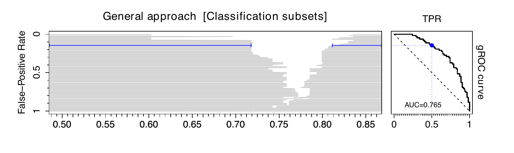
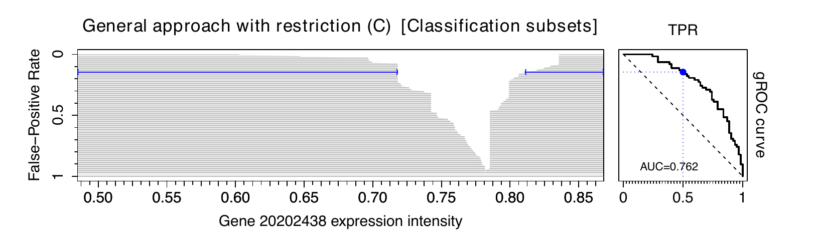
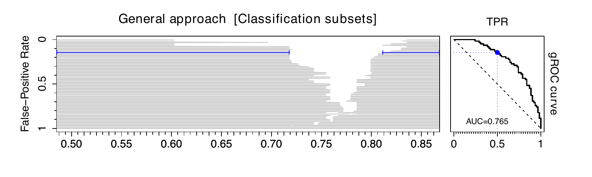
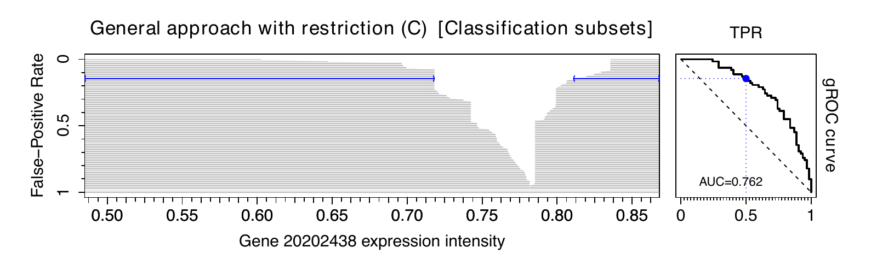
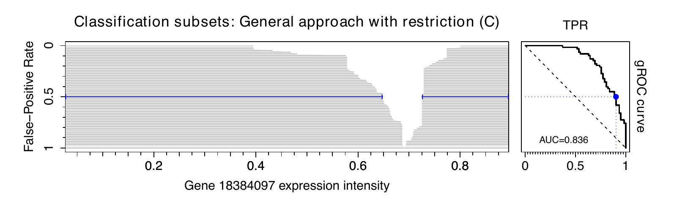
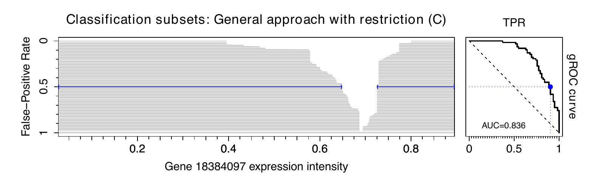

1 Introduction
The use of data to detect a characteristic of interest is a cornerstone of many disciplines such as medicine (to diagnose a pathology or to predict a patient outcome), finance (to detect fraud) or machine learning (to evaluate a classification algorithm), among others. Continuous markers are surrogate measures for the characteristic under study, or predictors of a potential subsequent event. They are measured in subjects, some of whom have the characteristic (positive), and some without it (negative). In addition to reliability and feasibility, a good marker must have two relevant properties: interpretability and accuracy (Mayeux 2004). High binary classification accuracy can be achieved if there exists a strong relationship between the marker and the response. The latter is assessed by a gold standard for the presence or absence of the characteristic of interest. Interpretability refers to the decision rules or subsets considered in the classification process. This piece of research seeks to elucidate both desirable properties for a marker by the implementation of a graphical tool in R language. We propose a novel approach involving the generation of videos as a solution to effectively capture the classification procedure for univariate and multivariate markers. Graphical analysis plays a pivotal role in data exploration, interpretation, and communication. Its burgeoning potential is underscored by the fast pace of technological advances, which empower the creation of insightful graphical representations.
A usual practice when the binary classification accuracy of a marker is of interest involves the representation of the Receiver Operating Characteristic (ROC) curve, summarized by the Area Under the Curve (AUC) (Hanley and McNeil 1982). The resulting plot reflects the trade-off between the sensitivity and the complement of the specificity. Sensitivity and specificity are probabilities of correctly classifying subjects, either positive or negative, respectively. Mathematically, let \(\xi\) and \(\chi\) be the random variables modeling the marker values in the positive and the negative population, respectively, with \(F_\xi(\cdot)\) and \(F_\chi(\cdot)\) their associated cumulative distribution functions. Assuming that the expected value of the marker is larger in the positive than in the negative population, the standard ROC curve is based on classification subsets of the form \(s = (c, \infty)\), where \(c\) is the so-called cut-off value or threshold in the support of the marker \(X\), \(\mathcal{S}(X)\). One subject is classified as a positive if its marker value is within this region, and as a negative otherwise. This type of subsets has two important advantages: first, their interpretability is clear; second, for each specificity \(1-t \in [0,1]\), the corresponding \(s_t = (c_t, \infty)\) is univocally defined by \(c_t = F_\chi^{-1}(1-t)\) for absolutely continuous markers.
When differences in marker distribution between the negative and the positive population are only in location but not in shape, then \(F_\chi(\cdot) < F_\xi(\cdot)\), and the classification is direct by using these decision rules. However, when this is not the case, the standard ROC curve may cross the main diagonal, resulting in an improper curve (Dorfman et al. 1997). This may be due to three different scenarios:
the behavior of the marker in the two studied populations is different but it is not possible to determine the decision rules. Notice that the binary classification problem goes further than distinction between the two populations: the classification subsets should be highly likely in one population and highly unlikely in the other one (Martı́nez-Camblor 2018);
there exists a relationship between the marker and the response with a potential classification use, but this is not monotone;
there is no relationship between the marker and the response at all (main diagonal ROC curve).
In the second case, we have to define classification subsets different from standard \(s_t=(c_t,\infty)\). Therefore, the use of the marker becomes more complex. With the aim of accommodating scenarios where both higher and lower values of the marker are associated with a higher risk of having the characteristic, Martı́nez-Camblor et al. (2017) proposed the so-called generalized ROC (gROC) curve. This curve tracks the highest sensitivity for every specificity in the unit interval resulting from subsets of the form \(s_t=(-\infty, x_t^L] \cup (x_t^U, \infty)\) with \(x_t^L \leq x_t^U \in \mathcal{S}(X)\).
Although final decisions are based on the underlying classification subsets, they are typically not depicted. This omission is not a shortcoming in standard cases, as for each specificity \(1-t \in [0,1]\), there is only one rule of the form \(s_t = (c_t, \infty)\) with such specificity. Particularly, \(s_t\) is univocally defined by \(c_t = 1 - F_\chi^{-1}(1-t)\); and the same applies if we fix a sensitivity. Nevertheless, if the gROC curve is taken, there are infinite subsets of the form \(s_t=(-\infty, x_t^L] \cup (x_t^U, \infty)\) resulting in \(\mathbb{P}(\chi \in s_t) = t\). This loss of univocity underlines the importance of reporting (numerically and/or graphically) the decision rules actually proposed for classifying. This gap is covered in the presented package.
An alternative approach to assess the classification performance of a marker involves considering a transformation of it. This transformation \(h(\cdot)\) aims to capture differences in distribution between the two populations in the ROC sense. Once \(h(\cdot)\) is identified, the standard ROC curve for \(h(X)\) is represented, resulting in the efficient ROC (eROC) curve (Kauppi 2016). Arguing as before, for a fixed specificity, the classification subsets \(s_t=(c_t, \infty)\) in the transformed space are univocally defined, where a subject is classified as positive if \(h(x) \in s_t\) and negative otherwise (with \(x\) representing its marker value). However, they may have any shape in the original space, depending on the monotonicity of the functional transformation \(h(\cdot)\) (Martı́nez-Camblor et al. 2019). Emphasizing the importance of tracking the decision rules underlying the eROC curve, this monitoring process enables an assessment of whether the improved accuracy of the marker justifies the potential loss in interpretability.
The ROC curve is defined for classification accuracy evaluation of univariate markers. To deal with multivariate markers, the usual practice is to consider a transformation \(\boldsymbol{h}(\cdot)\) to reduce it to a univariate one, and then to construct the standard ROC curve. Same considerations as before apply when a functional transformation is taken. In the proposed R library, we consider methods from the literature to define and estimate \(\boldsymbol{h}(\cdot)\) in the multivariate case (Kang et al. 2016; Meisner et al. 2021).
Focusing on the classification subsets underlying the decision rules, the movieROC package incorporates methods to visualize the construction process of ROC curves by presenting the classification accuracy of these subsets. For univariate markers, the library includes both the classical (standard ROC curve) and the generalized (gROC curve) approach. Besides, it enables the display of decision rules for various transformations of the marker, seeking to maximize performance and allowing for flexibility in the final shape of the subsets (eROC curve). For multidimensional markers, the proposed tool visualizes the evolution of decision subsets when different objective functions are employed for optimization, even imposing restrictions on the underlying regions. In this case, displaying the decision rules associated with every specificity in a single static image is no longer feasible. Therefore, dynamic representations (videos) are implemented, drawing on time as an extra dimension to capture the variation in specificity.
Much software available in R could be discussed here covering diverse topics related to ROC curves: the pROC package is a main reference including tools to visualize, estimate and compare ROC curves (Robin et al. 2011); ROCnReg explicitly considers covariate information to estimate the covariate-specific and the covariate-adjusted ROC curves (Rodrı́guez-Álvarez and Inácio 2021); smoothROCtime implements smooth estimation of time-dependent ROC curves based on the bivariate kernel density estimator for \((X, \textit{time-to-event})\) (Dı́az-Coto 2020); OptimalCutpoints includes point and interval estimation methods for optimal thresholds (López-Ratón et al. 2014); and nsROC performs non-standard analysis such as gROC estimation (Pérez-Fernández et al. 2018); among others.
This paper introduces and elucidates the diverse functionalities of the newly developed movieROC package, aimed at facilitating the visualization and comprehension of the decision rules underlying the binary classification process, encompassing various generalizations. Despite the availability of numerous R packages implementing related analyses, we have identified the main gaps covered in this library: tracking the decision rules underlying the ROC curve, including multivariate markers and non-standard scenarios (i.e. non-monotonic). The rest of the paper is structured as follows. In Section 2, we introduce the main R functions and objects implemented, and briefly explain the dataset employed throughout this manuscript to demonstrate the utility of the R library. Section 3 is devoted to reconsidering the definition of the standard ROC curve from the perspective of classification subsets, including an extension to multivariate scenarios. Sections 4 and 5 revisit the gROC curve and the eROC curve, respectively, covering various methods to capture the potential classification accuracy of the marker under study. Each of these sections begins with a state-of-the-art overview, followed by the main syntax of the corresponding R functions. In addition, examples of implementation using the dataset presented in Section 2.3 are provided. Finally, the paper concludes with a concise summary and computational details regarding the implemented tool.
2 Main functions of the movieROC package and illustrative dataset
Sections 2.1 and 2.2 provide a detailed description of the main objectives of the implemented R functions. To reflect the practical usage of the developed R package, we employ a real dataset throughout this manuscript, which is introduced in Section 2.3.
2.1 Functionality of the movieROC package
A graphical tool was developed to showcase static and dynamic graphics
displaying the classification subsets derived from maximizing diagnostic
accuracy under certain assumptions, ensuring the preservation of the
interpretability. The R package facilitates the construction of the ROC
curve across various specificities, providing visualizations of the
resulting classification regions. The proposed tool comprises multiple R
functions that generate objects with distinct class attributes (see
function names where red arrows depart from and red nodes in
Figure 1, respectively). Once the object of
interest is created, different methods may be used, in order to plot the
underlying regions (plot_regions(), plot_funregions()), to track the
resulting ROC curve (plot_buildROC(), plot()), to predict decision
rules for a particular specificity, and to print relevant information,
among others. The main function of the package, movieROC(), produces
videos to exhibit the classification procedure.

It includes algorithms to visualize the regions that underlie the binary classification problem, considering different approaches:
make the classification subsets flexible in order to cover non-standard scenarios, by considering two cut-off values (
gROC()function); explained in Section 4;transform the marker by a proper function \(h(\cdot)\) (
hROC()function); introduced in Section 5;when dealing with multivariate markers, consider a functional transformation with some fixed or dynamic parameters resulting from different methods available in the literature (
multiROC()function); covered in Section 3.1.
2.2 Class methods for movieROC objects
By using the gROC(), the multiROC() or the hROC() function, the
user obtains an R object of class ‘groc’, ‘multiroc’ or ‘hroc’,
respectively. These will be called
movieROC objects.
Once the object of interest is created, the implemented package includes
many functions (methods) to pass to it. Some of them are generic methods
(print(), plot() and predict()), commonly used in R language over
different objects according to their class attributes. The rest of the
functions are specific for this library and therefore only applicable to
movieROC objects.
The following outline summarizes all these functions and
provides their target and main syntax (with default input parameters).
Generic functions
print(): Print some relevant information.plot(): Plot the ROC curve estimate.predict(): Print the classification subsets corresponding to a particular false-positive rate (FPR) introduced by the user. For a ‘groc’ object, the user may specify a cut-off valueC(for the standard ROC curve) or two cut-off valuesXLandXU(for the gROC curve).
Specific functions
plot_regions()
Applicable to a ‘groc’ or a ‘hroc’ object. Plot two graphics in the same figure: left, classification subsets for each false-positive rate (grey color by default); right, \(90^\circ\) rotated ROC curve.
plot_regions(obj, plot.roc = TRUE, plot.auc = FALSE, FPR = 0.15, ...)If the input parameter FPR is specified, the corresponding classification region reporting such false-positive rate and the point in the ROC curve are highlighted in blue color.
plot_funregions()
Applicable to a ‘groc’ or a ‘hroc’ object.
Plot the transforming function and the classification subsets reporting the false-positive rate(s) indicated in the input parameter(s) FPR and FPR2.
plot_funregions(obj, FPR = 0.15, FPR2 = NULL, plot.subsets = TRUE, ...)plot_buildROC()
Applicable to a ‘groc’ or a ‘multiroc’ object.
- For a ‘
groc’ object: Plot four (if inputreduceis FALSE) or two (ifreduceis TRUE, only those on the top) graphics in the same figure: top-left, density function estimates for the marker in both populations with the areas corresponding to FPR and TPR colored (blue and red, respectively) for the optional input parameterFPR,CorXL, XU; top-right, the empirical ROC curve estimate; bottom-left, boxplots in both groups; bottom-right, classification subsets for every FPR (grey color).
plot_buildROC(obj, FPR = 0.15, C, XL, XU, h = c(1,1),
histogram = FALSE, breaks = 15, reduce = TRUE,
build.process = FALSE, completeROC = FALSE, ...)If build.process is FALSE, the whole ROC curve is displayed; otherwise, if completeROC is TRUE, the portion of the ROC curve until the fixed FPR is highlighted in black and the rest is shown in gray, while if completeROC is FALSE, only the first portion of the curve is displayed.
- For a ‘
multiroc’ object: Plot two graphics in the same figure: right, the ROC curve highlighting the point and the threshold for the resulting univariate marker; left, scatterplot with the marker values in both positive (red color) and negative (blue color) subjects. About the left graphic: for \(p=2\), over the original/feature bivariate space; for \(p>2\), projected over two selected components of the marker (ifdisplay.method = "OV"with components selection indisplayOV,c(1,2)by default) or the first two principal components from PCA (ifdisplay.method = "PCA", default). The classification subset reporting theFPRselected by the user (FPR\(\neq\)NULL) is displayed in gold color.
Main syntax:
for \(p=2\):plot_buildROC(obj, FPR = 0.15,
build.process = FALSE, completeROC = TRUE, ...)If build.process is FALSE, the whole ROC curve is displayed; otherwise, if completeROC is TRUE, the portion of the ROC curve until the fixed FPR is highlighted in black and the rest is shown in gray, while if completeROC is FALSE, only the first portion of the curve is shown.
movieROC()
Applicable to a ‘groc’ or a ‘multiroc’ object. Save a video as a GIF illustrating the construction of the ROC curve.
- For a ‘
groc’ object:
movieROC(obj, fpr = NULL,
h = c(1,1), histogram = FALSE, breaks = 15,
reduce = TRUE, completeROC = FALSE, videobar = TRUE,
file = "animation1.gif", ...)For each element in vector fpr (optional input parameter), the function executed is plot_buildROC(obj, FPR = fpr[i], build.process = TRUE, ...). The vector of false-positive rates illustrated in the video is NULL by default: if length of output parameter t for gROC() function is lower than 150, such vector is taken as fpr; otherwise, an equally-spaced vector of length 100 covering the range of the marker values is considered.
- For a ‘
multiroc’ object:
Main syntax:
for \(p=2\):movieROC(obj, fpr = NULL,
file = "animation1.gif", save = TRUE,
border = TRUE, completeROC = FALSE, ...)The video is saved by default as a GIF with the name indicated in argument file (extension .gif should be added). A border for the classification subsets is drawn by default.
For each element in vector fpr (optional input parameter), the function executed is
plot_buildROC(obj, FPR = fpr[i], build.process = TRUE, completeROC, ...)plot_buildROC(obj, FPR = fpr[i], build.process = TRUE, completeROC,
display.method, displayOV, ...)Same considerations about the input fpr as those for movieROC() over a ‘groc’ object.
2.3 Illustrative dataset
In order to illustrate the functionality of our R package, we consider
the HCC data. This dataset is derived from gene expression arrays of
tumor and adjacent non-tumor tissues of 62 Taiwanese cases of
hepatocellular carcinoma (HCC). The goal of the original study
(Shen et al. 2012) was to identify, with a genome-wide approach, additional
genes hypermethylated in HCC that could be used for more accurate
analysis of plasma DNA for early diagnosis, by using Illumina
methylation arrays (Illumina, Inc., San Diego, CA) that screen 27,578
autosomal CpG sites. The complete dataset was deposited in NCBI’s Gene
Expression Omnibus (GEO) and it is available through series accession
number GSE37988
(www.ncbi.nlm.nih.gov/geo/query/acc.cgi?acc=GSE37988).
It is included in the presented package (HCC dataset), selecting 948
genes with complete information.
The following code loads the R package and the HCC dataset (see the
vignette
for main structure).
R> library(movieROC)
R> data(HCC)We selected the genes 20202438, 18384097, and 03515901. On the one hand, we chose the gene 03515901 as an example of a monotone relationship between the marker and the response, reporting a good ROC curve. On the other hand, relative gene expression intensities of the genes 20202438 and 18384097 tend to be more extreme in tissues with tumor than in those without it. These are non-standard cases, so if we limit ourselves to detect “appropriate” genes on the basis of the standard ROC curve, they would not be chosen. However, extending the decision rules by means of the gROC curve, those genes may be considered as potential biomarkers (locations) to differ between the two groups. The R code estimating and displaying the density probability function for gene expression intensities of the selected genes in each group (Figure 2) is included in the vignette.

3 Regular ROC curve
Assuming that there exists a monotone relationship between the marker and the response, the regular, right-sided or standard ROC curve associated with the marker \(X\) considers classification subsets of the form \(s_t=(c_t,\infty)\). For each specificity \(1-t=\mathbb{P}(\chi \notin s_t) \in [0,1]\), also called true-negative rate, there exists only one subset \(s_t\) reporting such specificity and thus a particular sensitivity, also called true-positive rate, \(\mathbb{P}(\xi \in s_t)\). This results in a simple correspondence between each point of the ROC curve \(\mathcal{R}_r(t) = 1-F_\xi \big(F_\chi^{-1}(1-t)\big)\) and its associated classification region \(s_t \in \mathcal{I}_r(t)\), where \[\mathcal{I}_r(t) = \Big\{ s_t = (c_t, \infty) : c_t \in \mathcal{S}(X) , \mathbb{P}(\chi \in s_t) = t \Big\}\] is the right-sided family of eligible classification subsets. The definition of this family captures the shape of the decision rules and the target specificity.
If higher values of the marker are associated with a higher probability of not having the characteristic (see gene 03515901 in Figure 2), the ROC curve would be defined by the left-sided family of eligible classification subsets (Martı́nez-Camblor et al. 2017), \(\mathcal{I}_l(t)\), similarly to \(\mathcal{I}_r(t)\) but with the form \(s_t = (\infty, c_t]\). It results in \(\mathcal{R}_l(t) = F_\xi \big(F_\chi^{-1}(t) \big)\), \(t\in[0,1]\), and the decision rules are also univocally defined in this case.
The ROC curve and related problems were widely studied in the literature; interested readers are referred to the monographs of Zhou et al. (2002), Pepe (2003), and Nakas et al. (2023), as well as the review by Inácio et al. (2021). By definition, the ROC curve is confined within the unit square, with optimal performance achieved when it approaches the left-upper corner (AUC closer to 1). Conversely, proximity to the main diagonal (AUC closer to 0.5) means diminished discriminatory ability, resembling a random classifier.
In practice, let \((\xi_1, \xi_2, \dots, \xi_n)\) and
\((\chi_1, \chi_2, \dots, \chi_m)\) be two independent and identically
distributed (i.i.d.) samples from the positive and the negative
population, respectively. Different estimation procedures are
implemented in the
movieROC package,
such as the empirical estimator (Hsieh and Turnbull 1996) (by default in the gROC()
function), accompanied by its summary indices: the AUC and the Youden
index (Youden 1950). Alternatively, semiparametric approaches based on
kernel density estimation for the involved distributions may be
considered (Zou et al. 1997). The plot_densityROC() function provides plots
for both right- and left-sided ROC curves estimated by this method. On
the other hand, assuming that the marker follows a gaussian distribution
in both populations, that is,
\(\xi \sim \mathcal{N}(\mu_\xi, \sigma_\xi)\) and
\(\chi \sim \mathcal{N}(\mu_\chi, \sigma_\chi)\), parametric approaches
propose plug-in estimators by estimating the unknown parameters while
using the known distributions (Hanley 1988). This parametric estimation
is included in the gROC_param() function, which works similarly to
gROC().
Main syntax:
gROC(X, D, side = "right", ...)
gROC_param(X, D, side = "right", ...)Table 1 in the
vignette
provides the main input and output parameters of these R functions,
which estimate the regular ROC curve (right-sided or left-sided with
side = "right" or "left", respectively) and associated decision
rules. Its output is an R object of class ‘groc’, to which the
functions listed in Section 2.2 can be applied. Most of them are
visualization tools, but the user may also print() summary information
and predict() classification regions for a particular specificity.
Figure 3 graphically represents the empirical estimation of the standard (gray line) and generalized (black line) ROC curves for each gene in Figure 2. To construct the standard ROC curve for the first two genes (20202438 and 18384097), the right-sided ROC curve is considered; and the left-sided curve for the third one (03515901). As expected following the discussion about Figure 2, the standard and gROC curves are similar for the third gene because there exists a monotone relationship between the marker and the response. However, these curves differ for the first two genes due to the lack of monotonicity in those scenarios. The empirical gROC curve estimator is explained in detail in Section 4.
Next chunk of code generates the figure, providing an example of the use
of gROC() function, plot() and how to get access to the AUC.
R> for(gene in c("20202438", "18384097", "03515901")){
+ roc <- gROC(X = HCC[,paste0("cg",gene)], D = HCC$tumor,
+ side = ifelse(gene == "03515901", "left", "right"))
+ plot(roc, col = "gray50", main = paste("Gene", gene), lwd = 3)
+ groc <- gROC(X = HCC[,paste0("cg",gene)], D = HCC$tumor, side = "both")
+ plot(groc, new = FALSE, lwd = 3)
+ legend("bottomright", paste(c("AUC =", "gAUC ="), format(c(roc$auc, groc$auc),
+ digits = 3)), col = c("gray50", "black"), lwd = 3, bty = "n", inset = .01)}
The following code snippet estimates the standard ROC curve for gene
20202438, prints its basic information, and predicts the classification
region and sensitivity resulting in a specificity of 0.9. It provides an
illustrative example of utilizing the print() and predict()
functions.
R> roc_selg1 <- gROC(X = HCC$cg20202438, D = HCC$tumor, side = "right")
R> roc_selg1Data was encoded with nontumor (controls) and tumor (cases).
It is assumed that larger values of the marker indicate larger confidence that a
given subject is a case.
There are 62 controls and 62 cases.
The specificity and sensitivity reported by the Youden index are 0.855 and 0.403,
respectively, corresponding to the following classification subset: (0.799, Inf).
The area under the right-sided ROC curve (AUC) is 0.547.R> predict(roc_selg1, FPR = .1)$ClassSubsets $Specificity $Sensitivity
[1] 0.8063487 Inf [1] 0.9032258 [1] 0.3064516The following line of code displays the whole construction of the empirical standard ROC curve for gene 20202438. The video is saved by default as a GIF with the name provided.
R> movieROC(roc_selg1, reduce = FALSE, file = "StandardROC_gene20202438.gif")
3.1 Multivariate ROC curve
In practice, many cases may benefit from combining information from different markers to enhance classification accuracy. Rather than assessing univariate markers separately, taking the multivariate marker resulting from merging them can yield relevant gain. However, note that the ROC curve and related indices are defined only for univariate markers, as they require the existence of a total order. To address this limitation, a common approach involves transforming the \(p\)-dimensional multivariate marker \(\boldsymbol{X}\) into a univariate one through a functional transformation \(\boldsymbol{h}: \mathbb{R}^p \longrightarrow \mathbb{R}\). This transformation \(\boldsymbol{h}(\cdot)\) seeks to optimize an objective function related to the classification accuracy, usually the AUC (Su and Liu 1993; McIntosh and Pepe 2002; Martı́nez-Camblor et al. 2019).
We enumerate the methods included in the proposed R tool by the
multiROC() function (with the input parameter method), listed
according to the objective function to optimize. Recall that the output
of multiROC() is an object of class ‘multiroc’, containing
information about the estimation of the ROC curve and subsets for
multivariate scenarios. Table 2 in the
vignette
includes the usage of this function.
Main syntax:
multiROC(X, D, method = "lrm",
formula = 'D ~ X.1 + I(X.1^2) + X.2 + I(X.2^2) + I(X.1*X.2)', ...)- AUC: Different procedures to estimate the \(\boldsymbol{h}(\cdot)\) maximizing the AUC in the multidimensional case have been studied in the literature. Among all families of functions, linear combinations (\(\mathcal{L}_{\boldsymbol{\beta}}(\boldsymbol{X}) = \beta_1 X_1 + \dots + \beta_p X_p\)) are widely used due to their simplicity; an extensive review of the existing methods was conducted by Kang et al. (2016).
- Computation: In the
multiROC()function, fixing input parametersmethod = "fixedLinear"andmethodLinearto one from"SuLiu"(Su and Liu 1993),"PepeThompson"(Pepe and Thompson 2000), or"minmax"(Liu et al. 2011). The R function also admits quadratic combinations when \(p=2\), i.e. \(\mathcal{Q}_{\boldsymbol{\beta}}(\boldsymbol{X}) = \beta_1 X_1 + \beta_2 X_2 + \beta_3 X_1 X_2 + \beta_4 X_1^2 + \beta_5 X_2^2\), by fixingmethod = "fixedQuadratic"for a particularcoefQuadratic\(= \boldsymbol{\beta} = (\beta_1, \dots, \beta_5)\).
The risk score function logit\(\left\{ \mathbb{P}(D = 1 \, | \, \boldsymbol{X}) \right\}\): Our package allows the user to fit a logistic regression model (
method = "lrm") considering any family of functions (linear, quadratic, whether considering interactions or not...) by means of the input parameterformula.lrm. A stepwise regression model is fitted ifstepModel = TRUE. Details are explained in Section 5.The sensitivity for a particular specificity:
- Considering the theoretical discussion about the search of the optimal transformation \(\boldsymbol{h}(\cdot)\) pointed out in Section 5, Martı́nez-Camblor et al. (2021a) proposed to estimate it by multivariate kernel density estimation for positive and negative groups separately.
- Computation: The
multiROC()function integrates the estimation procedures for the bandwidth matrix developed by Duong (2007), by fixingmethod = "kernelOptimal"and choosing a proper method to estimate the bandwidth ("kernelOptimal.H").
- Mainly linear combinations have been explored to date in the scientific literature (Meisner et al. 2021; Pérez-Fernández et al. 2021). For a fixed specificity \(t\in[0,1]\), we seek the linear combination \(\mathcal{L}_{\boldsymbol{\beta}(t)}(\boldsymbol{X}) = \beta_1(t) X_1 + \dots + \beta_p(t) X_p\) maximizing the true-positive rate by considering standard subsets for the transformed marker. The coefficients \(\boldsymbol{\beta}(t)\) are called ‘dynamic parameters’ because they may be different for each \(t \in [0,1]\).
- Computation: Since our objective is to display the ROC curve,
\(\mathcal{L}_{\boldsymbol{\beta}(t)}(\boldsymbol{X})\) is
estimated for every \(t\) in a grid of the unit interval,
resulting in one \(\boldsymbol{\hat{\beta}}(t)\) for each \(t\).
This approach is time-consuming, especially when it is based on
the plug-in empirical estimators involved
(
method = "dynamicEmpirical", only implemented for \(p=2\)), and may result in overfitting. Instead, Meisner et al. (2021) method is recommended (method = "dynamicMeisner").
Once the classification subsets for a multivariate marker are
constructed by the multiROC() function, several R methods may be used
for the output object (see Section 2.2). They include print relevant
information or plot the resulting ROC curve. The main contribution of
the package is to plot the construction of the ROC curve together with
the classification subsets in a static figure for a particular FPR
(plot_buildROC() function), or in a video for tracking the whole
process (movieROC() function).
Figure 4
illustrates the videos resulting from movieROC() function.
Particularly, classification accuracy of the
bivariate marker (cg20202438, cg18384097) was studied by using four
different approaches indicated on the captions, considering linear
combinations (top) and nonlinear transformations (bottom). This figure
was implemented by the code below, integrating multiROC() and
movieROC() functions. Four videos are saved as GIF files with names
"PepeTh.gif" (a), "Meisner.gif" (b), "LRM.gif" (c), and
"KernelDens.gif" (d).
R> X <- HCC[ ,c("cg20202438", "cg18384097")]; D <- HCC$tumor
R> biroc_12_PT <- multiROC(X, D, method = "fixedLinear", methodLinear = "PepeThompson")
R> biroc_12_Meis <- multiROC(X, D, method = "dynamicMeisner", verbose = TRUE)
R> biroc_12_lrm <- multiROC(X, D)
R> biroc_12_kernel <- multiROC(X, D, method = "kernelOptimal")
R> list_biroc <- list(PepeTh = biroc_12_PT, Meisner = biroc_12_Meis,
+ LRM = biroc_12_lrm, KernelDens = biroc_12_kernel)
R> lapply(names(list_biroc), function(x) movieROC(list_biroc[[x]],
+ display.method = "OV", xlab = "Gene 20202438", ylab = "Gene 18384097",
+ cex = 1.2, alpha.points = 1, lwd.curve = 4, file = paste0(x, ".gif"))) |
 |
|---|---|
| (a) Linear combinations with fixed parameters by Pepe and Thompson (2000). | (b) Linear combinations with dynamic parameters by Meisner et al. (2021). |
 |
 |
|---|---|
(c) Logistic regression model with quadratic formula by default (see formula.lrm in Table 2 of the vignette). |
(d) Optimal transformation by multivariate kernel density estimation with "Hbcv" method by default (Martı́nez-Camblor et al. 2021a). |
Figure 4: Videos (from movieROC() function) of the classification procedure and ROC curve for the bivariate marker (cg20202438, cg18384097). Four different methods for classification are displayed.
When the marker has a dimension higher than two it is difficult to
visualize the data and the classification regions. Therefore, the
movieROC() function offers two options for showing the results, both
on a bidimensional space. On the one hand, to choose two of the
components of the multivariate marker and project the classification
subsets on the plane defined by them
(Figure 5, middle). On the other, to project the
classification regions on the plane defined by the two first principal
components (Figure 5, left). The R function prcomp() from stats
is used to perform Principal Components Analysis (PCA) (Hotelling 1933).
Figure 5 shows the difficulty in displaying the
decision rules when \(p>2\) (the 3 genes used along this manuscript), even
with the two options implemented in our package. It was generated using
multiROC() and plot_buildROC():
R> multiroc_PT <- multiROC(X = HCC[ ,c("cg20202438", "cg18384097", "cg03515901")],
+ D = HCC$tumor, method = "fixedLinear", methodLinear = "PepeThompson")
R> multiroc_PTData was encoded with nontumor (controls) and tumor (cases).
There are 62 controls and 62 cases.
A total of 3 variables have been considered.
A linear combination with fixed parameters estimated by PepeThompson approach has
been considered.
The specificity and sensitivity reported by the Youden index are 0.855 and 0.742,
respectively, corresponding to the cut-off point -0.0755 for the transformation
h(X) = 0.81*cg20202438 - 0.1*cg18384097 - 1*cg03515901.
The area under the ROC curve (AUC) is 0.811.R> plot_buildROC(multiroc_PT, cex = 1.2, lwd.curve = 4)
R> plot_buildROC(multiroc_PT, display.method = "OV", displayOV = c(1,3), cex = 1.2,
+ xlab = "Gene 20202438", ylab = "Gene 03515901", lwd.curve = 4)
4 Generalized ROC curve
There are scenarios whose standard ROC curves are not concave (first two genes in Figure 3, gray solid line), reflecting that the standard initial assumption of existence of a monotone relationship between the marker and the response is misleading. In Figure 2, we may see that difference in gene 20202438 distribution between those tissues which have the characteristic and those which do not is mainly in dispersion. To accommodate this common type of scenarios, Martı́nez-Camblor et al. (2017) extended the ROC curve definition to the case where both extremes for marker values are associated with a higher risk of having the characteristic of interest, by considering the both-sided family of eligible classification subsets: \[\mathcal{I}_g(t) = \Big\{ s_t = (-\infty,x_t^L] \cup (x_t^U, \infty) : x_t^L \leq x_t^U \in \mathcal{S}(X) , \mathbb{P}(\chi \in s_t) = t \Big\}.\]
It becomes crucial to consider the supremum in the definition of the generalized ROC curve because the decision rule for each \(t \in [0,1]\) is not univocally defined: there exist infinite pairs \(x_t^L \leq x_t^U\) reporting a specificity \(1-t\) (i.e. \(\mathcal{I}_g(t)\) is uncountably infinite). Computationally, this optimization process incurs a time-consuming estimation, depending on the number of different marker values in the sample.
After the introduction of this extension, several studies followed up
regarding estimation of the gROC curve (Martı́nez-Camblor et al. 2017; Martı́nez-Camblor and Pardo-Fernández 2019a)
and related measures such as its area (gAUC) (Martı́nez-Camblor et al. 2021b) and the
Youden index (Martı́nez-Camblor and Pardo-Fernández 2019b; Bantis et al. 2021). By considering this
generalization, another property of the classification subsets may be
lost: the regions may not be self-contained over the increase in
false-positive rate. It may happen that a subject is classified as a
positive for a particular FPR \(t_1\), but as a negative for a higher FPR
\(t_2\). Therefore, it is natural to establish a restriction (C) on the
classification subsets, ensuring that any subject classified as a
positive for a fixed specificity (or sensitivity) will also be
classified as a positive for any classification subset with lower
specificity (higher sensitivity). Pérez-Fernández et al. (2021) proposed an
algorithm to estimate the gROC curve under restriction (C), included
in the gROC() function of the presented R package. See final Section
for computational details about this algorithm implementation.
Main syntax:
gROC(X, D, side = "both", ...)
gROC_param(X, D, side = "both", ...)Table 1 in the
vignette
collects the input and output parameters of the gROC() function, which
estimates the gROC curve, both in the mentioned direction
(side = "both") and in the opposite, i.e. when classification subsets
of the form \(s_t=(x_t^L, x_t^U]\) are considered (side = "both2"). In
addition, all the particular methods for a ‘groc’ object collected in
Section 2.2 may be used in this general
scenario.
Following, the gene 20202438 expression intensity diagnostic accuracy is
evaluated by the gROC curve without restrictions (groc_selg1 object)
and under the restriction (C) (groc_selg1_C object). The
classification subsets and sensitivity for a specificity of \(0.9\) are
displayed with the predict() function.
R> groc_selg1 <- gROC(X = HCC$cg20202438, D = HCC$tumor, side = "both")
R> predict(groc_selg1, FPR = .1)$ClassSubsets $Specificity $Sensitivity
[,1] [,2] [1] 0.9032258 [1] 0.4032258
[1,] -Inf 0.7180623
[2,] 0.8296072 Inf R> groc_selg1_C <- gROC(X = HCC$cg20202438, D = HCC$tumor, side = "both",
+ restric = TRUE, optim = TRUE)All the classification regions underlying the standard and the
generalized ROC curves without and with restrictions are represented in
Figure 6. The following code was used to generate
the figure, illustrating the usage and output of the plot_regions()
function. Besides displaying all the classification regions underlying
every specificity (in gray), the one chosen by the user (FPR = 0.15 by
default) is highlighted in blue. Note that the ROC curves are rotated
\(90^\circ\) to the right, in order to use the vertical axis for FPR in
both plots.
R> plot_regions(roc_selg1, cex.legend = 1.5, plot.auc = TRUE,
+ main = "Standard right-sided assumption [Classification subsets]")
R> plot_regions(groc_selg1, plot.auc = TRUE, legend = F,
+ main.plotroc = "gROC curve",
+ main = "General approach [Classification subsets]")
R> plot_regions(groc_selg1_C, plot.auc = TRUE, legend = F,
+ main.plotroc = "gROC curve",
+ main = "General approach with restriction (C) [Classific. subsets]",
+ xlab = "Gene 20202438 expression intensity") 



It is clear the gain achieved for considering the generalized scenario for this marker, which fits better its distribution in each group. Standard estimated AUC is 0.547, while the gAUC increases to 0.765. The gAUC is not especially affected by imposing the restriction (C), resulting in 0.762.
5 Efficient ROC curve: pursuing an optimal transformation
By keeping classification subsets of the form \(s_t = (c_t, \infty)\), an alternative approach can be explored: transforming the univariate marker through a suitable function \(h: \mathbb{R} \longrightarrow \mathbb{R}\) to enhance its accuracy. Henceforth, the transformation \(h^*(\cdot)\) reporting the dominant ROC curve compared to the one from any other function (i.e. \(\mathcal{R}_{h^*}(\cdot) \geq \mathcal{R}_h(\cdot)\)) will be referred to as optimal transformation (in the ROC sense), and the resulting ROC curve is called eROC (Kauppi 2016). Following the well-known Neyman–Pearson lemma, McIntosh and Pepe (2002) proved that \(h^*(\cdot)\) is the likelihood ratio.
We enumerate the methods included in the proposed R tool by the hROC()
function (with the input parameter type), listed according to the
procedure considered to estimate \(h^*(\cdot)\). The output of this
function is an object of class ‘hroc’. See Table 3 in the
vignette
for function usage and output details.
Main syntax:
hROC(X, D, type = "lrm", formula.lrm = 'D ~ pol(X,3)', ...)- Martı́nez-Camblor et al. (2019) exploited the result proved by McIntosh and Pepe (2002), suggesting to estimate the logit of the risk function by logistic regression, since it is a monotone increasing transformation of the likelihood ratio.
- Computation: By the proposed R tool, the user can define any
transformation \(h(\cdot)\) for the right-hand side of the logistic
regression model to be fitted,
logit\(\big\{ \mathbb{P}(D = 1 \, | \, x) \big\} = h(x)\). Particularly, by
fixing the input parameters:
type = "lrm"and defining the function \(h(\cdot)\) asformula.lrm.
- Arguing as in Martı́nez-Camblor et al. (2021a) for univariate markers instead of multivariate, the optimal transformation in the ROC sense is equivalent to \(h^*(\cdot)=f_\xi(\cdot)/\big(f_\xi(\cdot) + f_\chi(\cdot)\big)\), where \(f(\cdot)\) denotes the density function. In order to estimate \(h^*(\cdot)\), different estimation procedures for the density functions separately may be used, such as the kernel density estimator.
- Computation: By the
hROC()function, the user may fixtype = "kernel"and choose a proper bandwidth for the kernel estimation bykernel.hin order to compute this method.
- Martı́nez-Camblor et al. (2019) also included the estimation of the overfitting function, \(h_{of}(\cdot)\), defined as the optimal one when no restrictions on the shape of \(h^*(\cdot)\) are imposed. It takes the value 1 for the positive marker values and 0 for the negative ones, reporting an estimated AUC of 1, but totally depending on the available sample (the resulting rules cannot be extended).
- Computation: \(h_{of}(\cdot)\) may be estimated by fixing the input
parameter
type = "overfitting".
The following code and figures study the capacity of improving the
classification performance of the gene 18384097 expression intensity via
the above functional transformations and its impact on the final
decision rules. The first one considers an ordinary cubic polynomial
formula (hroc_cubic_selg2), and a linear tail-restricted cubic spline
(hroc_rcs_selg2) for the right-hand side of the logistic regression model.
The second one uses two different bandwidths (\(h=1\) and \(h=3\)) for
density function estimation. For a comparative purpose, the last one
estimates the gROC curve under restriction (C).
R> X <- HCC$cg18384097; D <- HCC$tumorR> hroc_cubic_selg2 <- hROC(X, D); hroc_cubic_selg2Data was encoded with nontumor (controls) and tumor (cases).
There are 62 controls and 62 cases.
A logistic regression model of the form D ~ pol(X,3) has been performed.
The estimated parameters of the model are the following:
Intercept X X^2 X^3
"1.551" "32.054" "-120.713" "100.449"
The specificity and sensitivity reported by the Youden index are 0.935 and 0.532,
respectively, corresponding to the following classification subset:
(-Inf, 0.442) U (0.78, Inf).
The area under the ROC curve (AUC) is 0.759.R> hroc_rcs_selg2 <- hROC(X, D, formula.lrm = "D ~ rcs(X,8)")
R> hroc_lkr1_selg2 <- hROC(X, D, type = "kernel")
R> hroc_lkr3_selg2 <- hROC(X, D, type = "kernel", kernel.h = 3)
R> hroc_overfit_selg2 <- hROC(X, D, type = "overfitting")
R> groc_selg2_C <- gROC(X, D, side = "both", restric = TRUE, optim = TRUE)The following code snippet compares the AUC achieved from each approach considered above:
R> list_hroc <- list(Cubic = hroc_cubic_selg2, Splines = hroc_rcs_selg2,
+ Overfit = hroc_overfit_selg2, LikRatioEst_h3 = hroc_lkr3_selg2,
+ LikRatioEst_h1 = hroc_lkr1_selg2, gAUC_restC = groc_selg2_C)R> AUCs <- sapply(list_hroc, function(x) x$auc)
R> round(AUCs, 3)Cubic Splines Overfit LikRatioEst_h3 LikRatioEst_h1 gAUC_restC
0.759 0.807 1.000 0.781 0.799 0.836The shape of the classification regions over the original space
\(\mathcal{S}(X)\) depends on the monotonicity of \(h^*(\cdot)\), which may
be graphically studied by the plot_funregions() function (see
Figure 7). These regions can be visualized by
the R function plot_regions() (see
Figure 8). Both are explained in
Section 2.2 and illustrated below. The next chunk of
code produced Figure 7, representing the different functional
transformations estimated previously:
R> lapply(list_hroc, function(x) plot_funregions(x, FPR = .15, FPR2 = .5))
Finally, using the plot_regions() function,
Figure 8 shows the resulting classification subsets
over the original space for the best two of the six methods above. The first
method (fitting a logistic regression model with restricted cubic
splines with 8 knots) reports an AUC of 0.804 (compared to 0.684 by the
standard ROC curve), but the shape of some classification rules is
complex, such as \(s_t=(-\infty,a_t] \cup (b_t,c_t] \cup (d_t,\infty)\).
This area increases to 0.836 by considering subsets of the form
\(s_t=(-\infty,x_t^L] \cup (x_t^U,\infty)\), even imposing the restriction
\(\textit{(C)}\) to get a functional transformation \(h(\cdot)\).
 

6 Summary and conclusion
Conducting binary classification using continuous markers requires establishment of decision rules. In the standard case, each specificity \(t \in [0,1]\) entails a classification subset of the form \(s_t = (c_t,\infty)\) univocally defined. However, in more complex situations – such as where there is a non-monotone relationship between the marker and the response or in multivariate scenarios – these become not clear. Visualization of the decision rules becomes crucial in these cases. To address this, the movieROC package incorporates novel visualization tools complementing the ROC curve representation.
This R package offers a user-friendly and easily comprehensible software solution tailored for practical researchers. It implements statistical techniques to estimate and compare, and finally to graphically represent different classification procedures. While several R packages address ROC curve estimation, the proposed one emphasizes the classification process, tracking the decision rules underlying the studied binary classification problem. This tool incorporates different considerations and transformations which may be useful to capture the potential of the marker to classify in non-standard scenarios. Nevertheless, this library is also useful in standard cases, as well as when the marker itself comes from a classification or regression method (such as support vector machines), because it provides nice visuals and additional information not usually reported with the ROC curve.
The main function of the package, movieROC(), allows users to monitor how
the resulting classification subsets change along different
specificities, thereby building the corresponding ROC curve. Notably, it
introduces time as a third dimension to keep those specificities,
generating informative videos. For interested readers or potential users
of movieROC, the
manual
available in CRAN provides complete information about the implemented
functions and their parameters. In addition, a
vignette
is accessible, including mathematical formalism and details about the
algorithms implemented.
Computational considerations
Dependencies
Some functions of our package depend on other libraries available on CRAN:
gROC(X, D, side = "both", restric = TRUE, optim = TRUE, ...)uses theallShortestPaths()function in the e1071 package (Meyer et al. 2023).hROC(X, D, type = "lrm", ...)andmultiROC(X, D, method = "lrm", ...)use thelrm()function in the rms package (Harrell Jr 2023).multiROC(X, D, method = "kernelOptimal", ...)uses thekde()function in the ks package (Duong 2023).multiROC(X, D, method = "dynamicMeisner", ...)uses themaxTPR()function in the maxTPR package (Meisner et al. 2021). This package was removed from the CRAN repository, so we integrated the code of themaxTPR()function into our package. This function usesRsolnp::solnp()androbustbase::BYlogreg().multiROC(X, D, method = "fixedLinear", methodLinear, ...)uses the R functions included in Kang et al. (2016) (Appendix). We integrated this code into our package.movieROC(obj, save = TRUE, ...)uses thesaveGIF()function in the animation package (Xie et al. 2021).
Limitations
Users should be aware of certain limitations while working with this package:
Some methods are potentially time-consuming, especially with medium to large sample sizes:
The estimation of the gROC curve under restriction (C) can be computationally intensive, especially when considering different FPR to locally optimize the search using
gROC(X, D, side = "both", restric = TRUE, optim = TRUE, t0max = TRUE). Note that this method involves a quite exhaustive search of the self-contained classification subsets leading to the optimal gROC curve estimate. However, even selecting different false-positive rates \(t_0\) to start from, it may not result in the optimal achievable estimate under restriction (C). Input parametersrestric,optim,t0andt0maxforgROC()function included in Table 1 of the vignette serve to control this search.Similarly, it also occurs for multivariate markers when considering linear frontiers with dynamic parameters (by using
multiROC(X, D, method = "dynamicMeisner" | "dynamicEmpirical")).
Most implemented R functions consider empirical estimation for the resulting ROC curve, even if the procedure to estimate the decision rules is semi-parametric. An exception is the
gROC_param()function, which accommodates the binormal scenario.When visualizing classification regions for multivariate markers with high dimension (
plot_buildROC()andmovieROC()functions for a ‘multiroc’ object), our package provides some alternatives, but additional improvements could provide further aid in interpretation.
Acknowledgements
The authors acknowledge support by the Grants PID2019-104486GB-I00 and PID2020-118101GB-I00 from Ministerio de Ciencia e Innovación (Spanish Government), and by a financial Grant for Excellence Mobility for lecturers and researchers subsidized by the University of Oviedo in collaboration with Banco Santander.
6.1 CRAN packages used
movieROC, pROC, ROCnReg, OptimalCutpoints, nsROC, rms, ks, e1071, animation
6.2 CRAN Task Views implied by cited packages
Cluster, Distributions, DynamicVisualizations, Econometrics, Environmetrics, MachineLearning, Psychometrics, ReproducibleResearch, Survival, TeachingStatistics
6.3 Note
This article is converted from a Legacy LaTeX article using the texor package. The pdf version is the official version. To report a problem with the html, refer to CONTRIBUTE on the R Journal homepage.